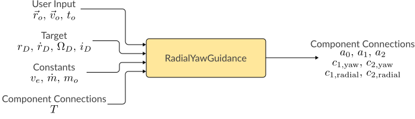
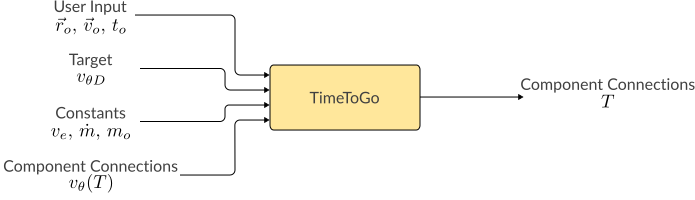
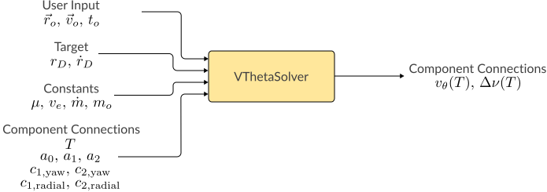
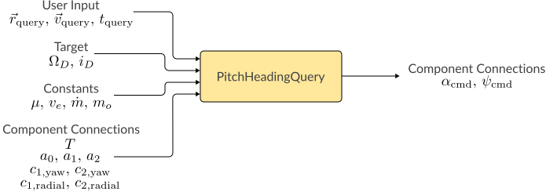
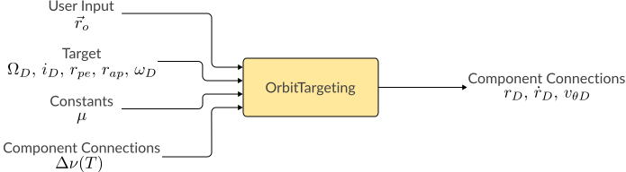
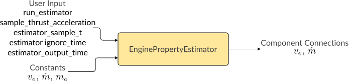

3. Guidance Components¶
This library uses OpenMDAO to encapsulate components of the guidance algorithm.
The primary use of OpenMDAO in this program is to organize the ascent guidance into separate blocks, using OpenMDAO's ExplicitComponent class. This exposes the intermediate variables for documentation, and allows testing of separate parts of the algorithm.
The guidance components are then organized into groups, using OpenMDAO's Group class. Any blocks that have inputs/outputs that share the same name are automatically connected.
The final guidance algorithm is implemented as a subclass of Group before being used in a guidance object.
Some components output variables used for debugging. These outputs are not shown in the diagrams below.
NOTE: The documentation refers to true anomaly as $\nu$, but the code uses "theta" to represent true anomaly.
3.1. RadialYawGuidance¶
This module calculates the $c_1$ and $c_2$ constants for the radial guidance law (C.3.6) and the plane control guidance law (C.4.4).

Vehicle thrust acceleration $a_T(t)$ is written as a second-order Taylor series of $a_T=v_e/(\tau-t)$ about terminal time $T$
$$\begin{align} a_T(t) = a_0 + a_1(T-t) + a_2(T-t)^2 \end{align}$$
where
$$\begin{align} a_0& = a_T(T) = v_e/(\tau - T)\\ a_1& = -\dot a_T(t) = -a_0^2/v_e\\ a_2& = 2 \ddot a_T(T) = a_0^3/v_e^2 \end{align}$$
Equations (C.2.13-16) for the $F$ matrix then become
$$\begin{align} f_{11} & = a_0 T_{go} + a_1 T_{go}^2/2 + a_2 T_{go}^3/3 \\ f_{12} & = a_0 T_{go}^2/2 + a_1 T_{go}^3/3 + a_2 T_{go}^4/4 \\ f_{21} & = f_{12} \\ f_{22} & = a_0 T_{go}^3/3 + a_1 T_{go}^4/4 + a_2 T_{go}^5/5 \end{align}$$
The following equations are solved for the $c_1$ and $c_2$ constants using a linear matrix solver
$$\begin{align} \begin{bmatrix} \dot y_D - \dot y_o\\ y_D - (y_o + \dot y_o T_{go}) \end{bmatrix} = F \begin{bmatrix} c_{1, \textrm{yaw}}\\ c_{2, \textrm{yaw}} \end{bmatrix} \end{align}$$ $$\begin{align} \begin{bmatrix} \dot r_D - \dot r_o\\ r_D - (r_o + \dot r_o T_{go}) \end{bmatrix} = F \begin{bmatrix} c_{1, \textrm{radial}} \\ c_{2, \textrm{radial}} \end{bmatrix} \end{align}$$
where the boundary conditions and $T_{go}$ are determined by input variables.
This module outputs $c_{1, \textrm{radial}}$, $c_{2, \textrm{radial}}$, $c_{1, \textrm{yaw}}$, $c_{2, \textrm{yaw}}$, $a_0$, $a_1$, and $a_2$.
3.2. TimeToGo¶
This module iteratively estimates cut-off time $T$ when connected to the RadialYawGuidance and VThetaSolver modules.

A fixed-point iteration scheme is used where $Q_{n}$ is the variable iteratively being solved for, as in Equation (C.5.10):
$$\begin{align} Q_{n+1} = \exp \begin{bmatrix} \frac{-(v_{\theta D} - v_{\theta o})}{v_e} \end{bmatrix} \frac{Q_n}{H(T_n)} \tag{C.5.10} \\ \end{align}$$
The next estimate of cut-off time $T_{n+1}$ is found from $Q_{n+1}$ using Equation (C.5.8):
$$\begin{align} T_{n+1} &= T_{go,n+1} + t_o \\ &= \tau_o \{1 - \exp [-(v_{\theta D} - v_{\theta o})/v_e]\, Q_{n+1}\} + t_o \end{align}$$
The output is $T$. This module must be the first component to run if other components require $T$ as input.
3.3. VThetaSolver¶
This module calculates the circumferential velocity $v_\theta$ at final time $T$, and the change in true anomaly $\Delta \nu$ of the vehicle from current time $t_o$ to cut-off time $T$.

A Runge-Kutta 4th order integrator is used to integrate the differential equations (C.6.1) and (C.8.4)
$$\begin{gather} \dot v_{\theta}(t) = \vec a_T \cdot \hat \theta - \dot r v_\theta / r \tag{C.6.1} \\ \dot \nu_{peri} = \frac{\vec v \cdot \hat j}{r_{peri}} \tag{C.8.4} \end{gather}$$
Appendix C.6. outlines the calculation of $\vec a_T$, $\hat \theta$, $\dot r$, and $r$ based on the radial and plane control guidance laws.
The outputs are $v_\theta(T)$ and $\Delta \theta(T)$.
3.4. PitchHeadingQuery¶
This module calculates commanded pitch and heading of the vehicle using (C.7.1) and (C.7.2)

The commanded pitch and heading are calculated as in the following equations:
$$\begin{align} \alpha & = \sin^{-1}\left(\frac{\vec a_T \cdot \hat r}{a_T}\right) \tag{C.7.1}\\ \psi & = \textrm{atan2}(a_{T}\cdot \hat e,\, a_{T} \cdot \hat n) \tag{C.7.2} \end{align}$$
This module uses $\vec a_T$ as calculated in Appendix C.6.
3.5. OrbitTargeting¶
This module outputs $r_D$, $\dot r_D$ and $v_{\theta D}$ based on desired $r_p$, $r_a$, and $\omega$. The method of calculation is outlined in Appendix C.9.

3.6. EnginePropertyEstimator¶
This module determines $v_e$ and $\dot m$ of the engine based on measurements of the acceleration from thrust.

This module uses a least-squares estimator to find the variables $v_e$ and $\dot m$ based on the equation for rocket thrust (C.1.6):
$$\begin{align} a_T &= v_e/\left(\tau - t\right) \tag{C.1.6} \\ &= \frac{v_e}{\frac{m_o}{\dot m} - t} \end{align}$$
Internally, the module estimates $v_e$ and $\tau$. $\dot m$ is then calculated from $\tau = m_o/\dot m$, with the user providing $m_o$.